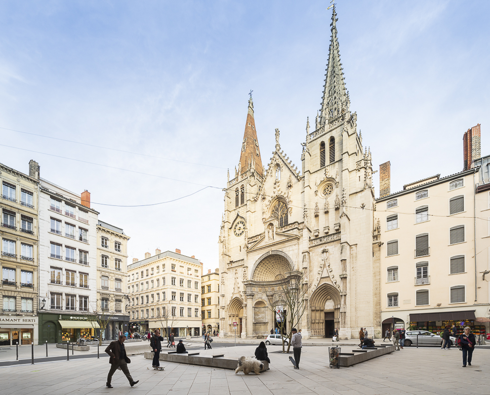

Ou se garer à proximité de l'église ?
Parking LPA des Cordeliers - 6 minutes à pied
18 rue Claudia — 69002 Lyon
04 72 41 65 27
Parking LPA Saint Antoine - 2 minutes à pied
2 quai Saint-Antoine — 69002 Lyon
04 78 27 15 72
Parking LPA Hôtel de Ville - 10 minutes à pied
Place Louis Pradel — 69001 Lyon
04 78 39 75 85
Parking LPA Bourse - 5 minutes à pied
Rue de la Bourse — 69002 Lyon
04 72 41 65 27


La cérémonie religieuse
Nous vous partagerons le livret des chants quelques mois à l'avance.